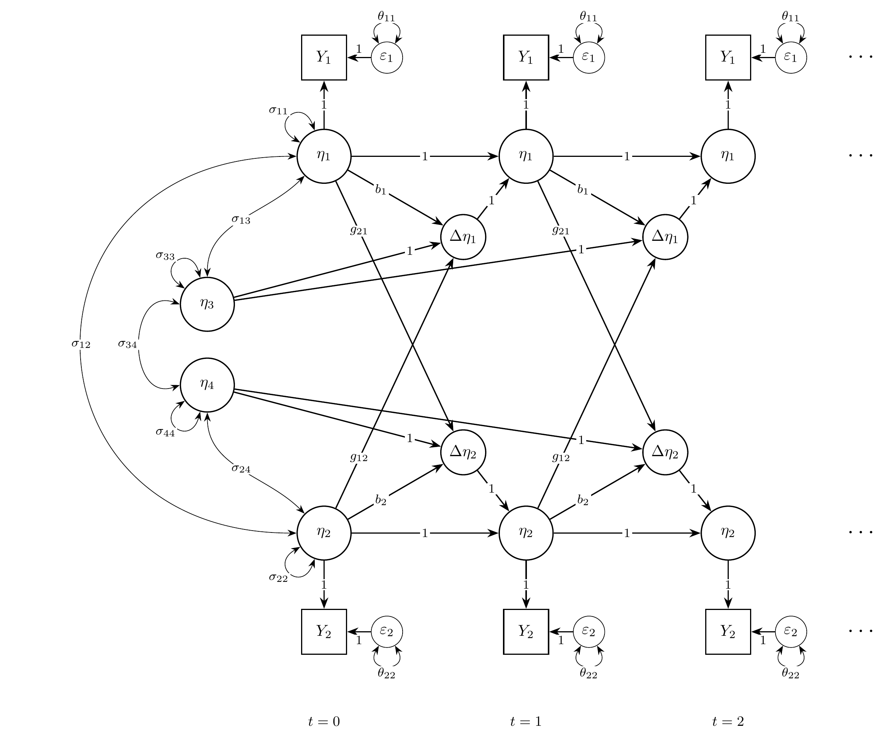
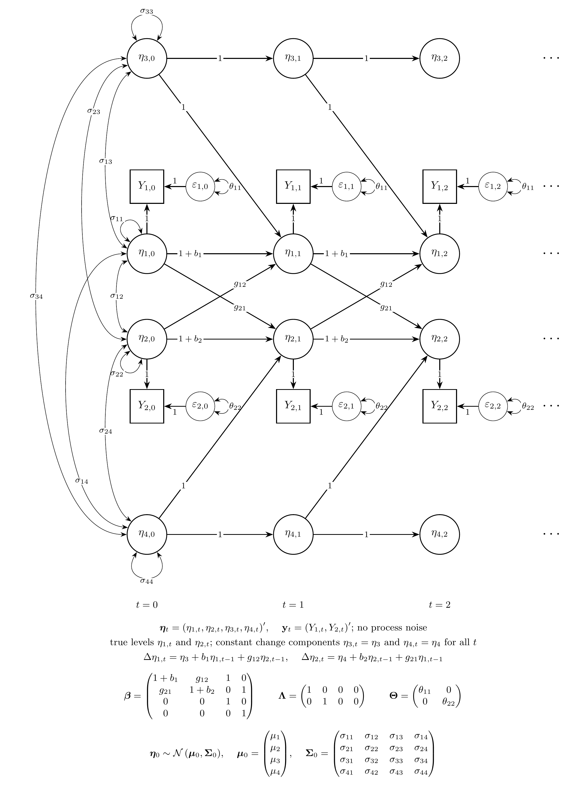
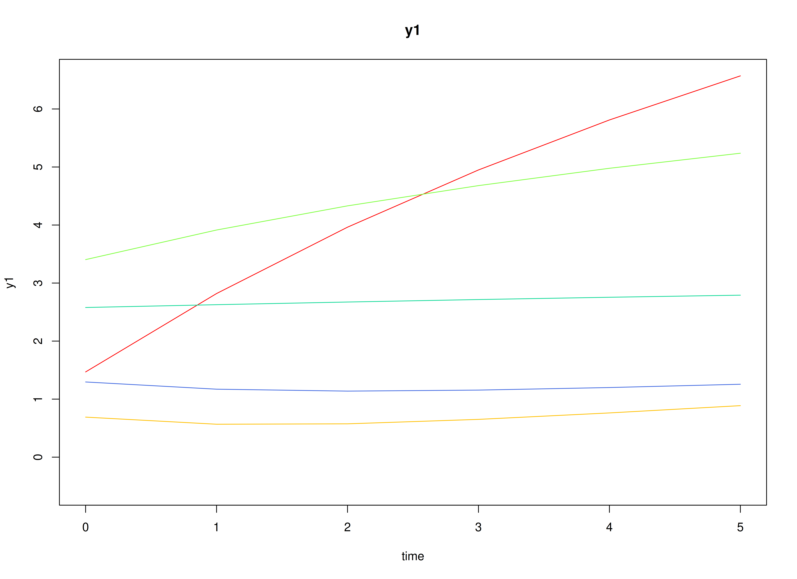
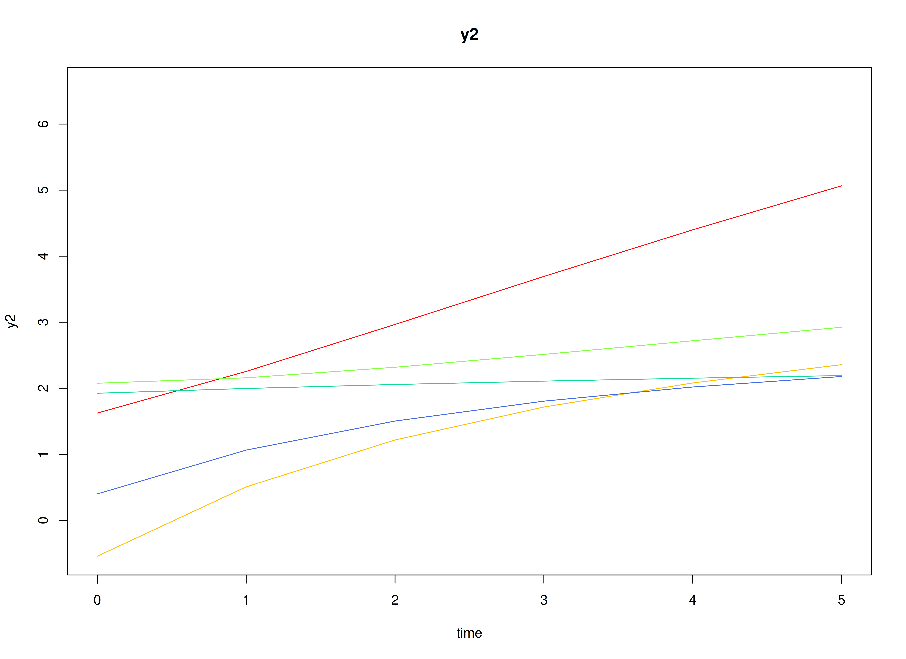
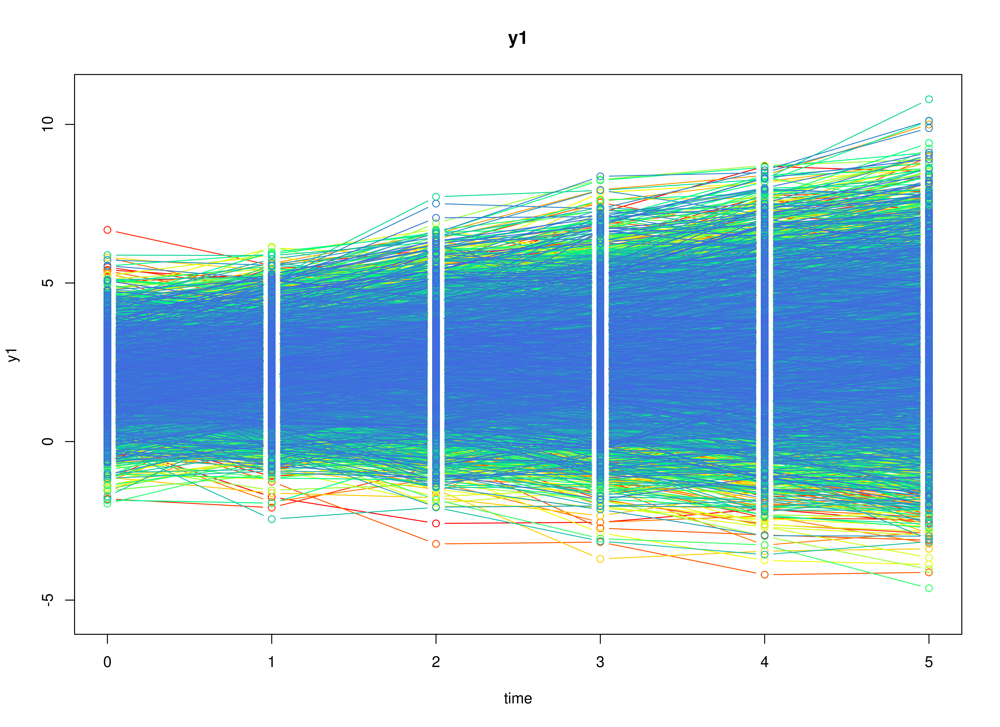
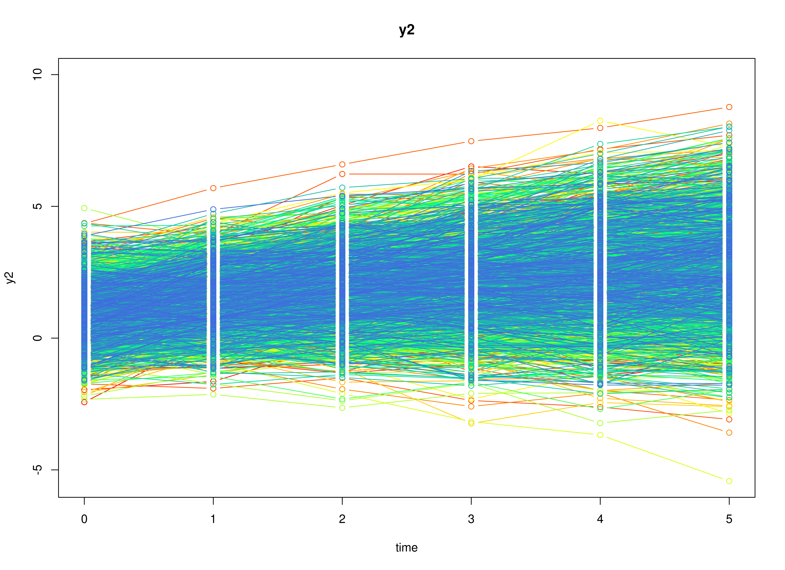
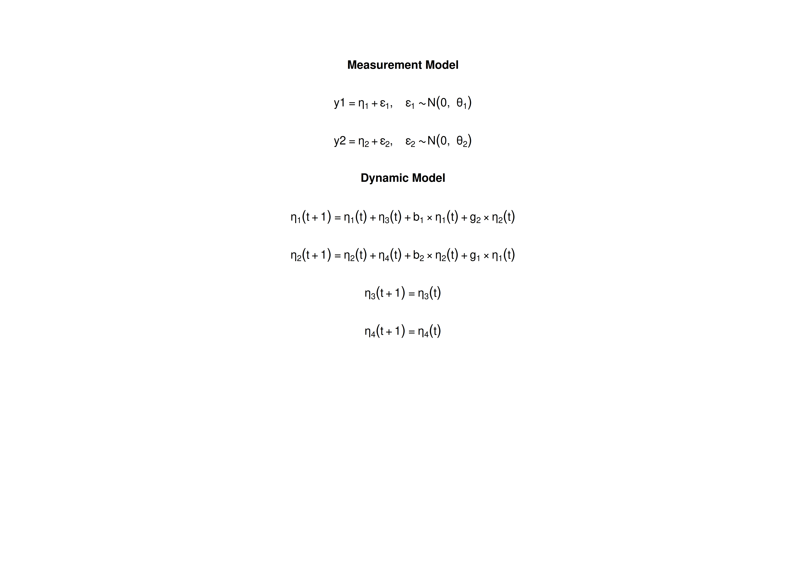

The Bivariate Dual Change Score Model
Ivan Jacob Agaloos Pesigan
2026-11-05
Source:vignettes/lcs.Rmd
lcs.RmdOverview
Latent change score models describe change itself (McArdle, 2009). Take vocabulary and reading comprehension measured once a year in children. From one occasion to the next, each child’s vocabulary changes. In the dual change score model, the change has two sources: a constant amount each child gains every year (the slope), and an amount that depends on where the child stood the year before (the self-feedback). In the bivariate model, the change in one variable can also depend on the previous level of the other variable (the coupling), for example, if children with a larger vocabulary gain more in reading comprehension.
The dual change score model is usually fitted as a structural equation model (SEM). It can also be written as a state space model: the true levels of the two variables are latent states, and the slopes are latent states that never change.
This tutorial does three things:
- It writes the bivariate dual change score model as a state space model.
- It simulates data from the model with
SimSSMFixed(). - It fits the model to the simulated data as a state space model with
dynrandOpenMxand as a structural equation model (SEM) withlavaanandOpenMx, and compares every set of estimates with the values used to simulate the data.
No prior knowledge of state space models is needed.
Model
The measurement model is given by \left( \begin{array}{c} Y_{1_{i, t}} \\ Y_{2_{i, t}} \\ \end{array} \right) = \left( \begin{array}{cccc} 1 & 0 & 0 & 0 \\ 0 & 1 & 0 & 0 \\ \end{array} \right) \left( \begin{array}{c} \eta_{1_{i, t}} \\ \eta_{2_{i, t}} \\ \eta_{3_{i, t}} \\ \eta_{4_{i, t}} \\ \end{array} \right) + \left( \begin{array}{c} \varepsilon_{1_{i, t}} \\ \varepsilon_{2_{i, t}} \\ \end{array} \right), \quad \mathrm{with} \quad \left( \begin{array}{c} \varepsilon_{1_{i, t}} \\ \varepsilon_{2_{i, t}} \\ \end{array} \right) \sim \mathcal{N} \left( \mathbf{0}, \left( \begin{array}{cc} \theta_{11} & 0 \\ 0 & \theta_{22} \\ \end{array} \right) \right) where Y_{1_{i, t}} and Y_{2_{i, t}} are the two observed variables at time t and individual i, \eta_{1_{i, t}} and \eta_{2_{i, t}} are their true levels, \eta_{3_{i, t}} and \eta_{4_{i, t}} are their slopes, and \theta_{11} and \theta_{22} are the measurement error variances.
In words, each observed score is the true level plus measurement error. The slopes have loadings of 0: they affect the scores only through the change in the true levels.
The change in the true level of the first variable from occasion t - 1 to occasion t is \Delta \eta_{1_{i, t}} = \eta_{3_{i, t - 1}} + b_{1} \eta_{1_{i, t - 1}} + g_{12} \eta_{2_{i, t - 1}} , and similarly for the second variable, \Delta \eta_{2_{i, t}} = \eta_{4_{i, t - 1}} + b_{2} \eta_{2_{i, t - 1}} + g_{21} \eta_{1_{i, t - 1}}. The true level at occasion t is the previous true level plus the change, \eta_{1_{i, t}} = \eta_{1_{i, t - 1}} + \Delta \eta_{1_{i, t}}.
Writing the change into the level gives the dynamic structure \left( \begin{array}{c} \eta_{1_{i, t}} \\ \eta_{2_{i, t}} \\ \eta_{3_{i, t}} \\ \eta_{4_{i, t}} \\ \end{array} \right) = \left( \begin{array}{cccc} 1 + b_{1} & g_{12} & 1 & 0 \\ g_{21} & 1 + b_{2} & 0 & 1 \\ 0 & 0 & 1 & 0 \\ 0 & 0 & 0 & 1 \\ \end{array} \right) \left( \begin{array}{c} \eta_{1_{i, t - 1}} \\ \eta_{2_{i, t - 1}} \\ \eta_{3_{i, t - 1}} \\ \eta_{4_{i, t - 1}} \\ \end{array} \right) .
In words, b_{1} and b_{2} are the self-feedback effects: a negative value means that individuals who stand higher gain less, so the levels level off over time. g_{12} is the coupling from the second variable to the first: a positive value means that a higher level of the second variable is followed by a larger gain in the first. g_{21} is the reverse. The slopes stay the same over time. As in most applications of the model, there is no process noise: once the initial levels and the slopes are set, the true trajectories are fixed.
The initial condition holds the means, variances, and covariances of the initial true levels and the slopes, \boldsymbol{\eta}_{i, 0} \sim \mathcal{N} \left( \boldsymbol{\mu}_{0}, \boldsymbol{\Sigma}_{0} \right) .
For example, a positive covariance between the initial level and the slope of the same variable means that individuals who start higher also tend to gain more each year.
Diagrams

The bivariate dual change score model as a path diagram, for the first three occasions (t = 0, 1, 2). The true level at each occasion, \eta_{1} or \eta_{2}, is the previous level plus the latent change \Delta \eta_{1} or \Delta \eta_{2} (the arrows with a loading of 1). Each change is the slope (\eta_{3} or \eta_{4}), plus the self-feedback effect (b_{1} or b_{2}) of the previous level of the same variable, plus the coupling effect (g_{12} or g_{21}) of the previous level of the other variable. \varepsilon_{1} and \varepsilon_{2} are the measurement errors, with variances \theta_{11} and \theta_{22}. A loop on a variable is its variance and a curved two-headed arrow a covariance. The initial levels and the slopes have variances \sigma_{11} to \sigma_{44} and all covary; to keep the diagram readable, only the covariances \sigma_{12}, \sigma_{13}, \sigma_{24}, and \sigma_{34} are drawn.

The same model in state space form, for the first three occasions,
with every element of the state drawn. The latent changes are not
states: writing each change into the level gives the arrows 1 + b_{1}, 1 +
b_{2}, g_{12}, and g_{21} between the levels \eta_{1, t} and \eta_{2, t}, and the arrows with a loading of
1 from the slopes. The slopes are states with a transition of 1, so
\eta_{3, t} = \eta_{3} and \eta_{4, t} = \eta_{4} for all t. There is no process noise. At t = 0, the initial condition \boldsymbol{\eta}_{0} \sim \mathcal{N} \left(
\boldsymbol{\mu}_{0}, \boldsymbol{\Sigma}_{0} \right) gives all
the variances and covariances of the levels and the slopes at t = 0. Below the diagram, all the latent
variables at one occasion form the state vector \boldsymbol{\eta}_{t}, and all the observed
variables form \mathbf{y}_{t}: \boldsymbol{\beta} carries the state from one
occasion to the next, \boldsymbol{\Lambda} maps the state to the
observed variables, and \boldsymbol{\Theta} is the covariance matrix
of the measurement error \boldsymbol{\varepsilon}_{t}.
SimSSMFixed() takes beta, lambda,
mu0, and the Cholesky factors of \boldsymbol{\Theta} and \boldsymbol{\Sigma}_{0} (theta_l
and sigma0_l); psi_l is a matrix of zeros.
Data Generation
Notation
Let t = 6 be the number of time points and n = 5000 be the number of individuals.
Let the self-feedback effects be b_{1} = -0.2 and b_{2} = -0.3, and the coupling effects be g_{12} = 0.1 and g_{21} = 0.2, so that
\boldsymbol{\beta} = \left( \begin{array}{cccc} 0.8 & 0.1 & 1 & 0 \\ 0.2 & 0.7 & 0 & 1 \\ 0 & 0 & 1 & 0 \\ 0 & 0 & 0 & 1 \\ \end{array} \right) .
Let the initial condition be
\boldsymbol{\mu}_{0} = \left( \begin{array}{c} 2 \\ 1 \\ 0.5 \\ 0.4 \\ \end{array} \right) \quad \mathrm{and,} \quad \boldsymbol{\Sigma}_{0} = \left( \begin{array}{cccc} 1 & 0.3 & 0.15 & 0.05 \\ 0.3 & 1 & 0.05 & 0.15 \\ 0.15 & 0.05 & 0.25 & 0.05 \\ 0.05 & 0.15 & 0.05 & 0.25 \\ \end{array} \right) ,
and the measurement error variances be \theta_{11} = 0.2 and \theta_{22} = 0.2.
R Function Arguments
The simulation functions take covariance matrices as lower triangular
Cholesky factors (the arguments ending in _l). There is no
process noise, so psi and psi_l are zero
matrices.
n
#> [1] 5000
time
#> [1] 6
mu0
#> [1] 2.0 1.0 0.5 0.4
sigma0
#> [,1] [,2] [,3] [,4]
#> [1,] 1.00 0.30 0.15 0.05
#> [2,] 0.30 1.00 0.05 0.15
#> [3,] 0.15 0.05 0.25 0.05
#> [4,] 0.05 0.15 0.05 0.25
sigma0_l # sigma0_l <- t(chol(sigma0))
#> [,1] [,2] [,3] [,4]
#> [1,] 1.00 0.000000000 0.00000000 0.0000000
#> [2,] 0.30 0.953939201 0.00000000 0.0000000
#> [3,] 0.15 0.005241424 0.47694080 0.0000000
#> [4,] 0.05 0.141518453 0.08755435 0.4688355
alpha
#> [1] 0 0 0 0
beta
#> [,1] [,2] [,3] [,4]
#> [1,] 0.8 0.1 1 0
#> [2,] 0.2 0.7 0 1
#> [3,] 0.0 0.0 1 0
#> [4,] 0.0 0.0 0 1
psi
#> [,1] [,2] [,3] [,4]
#> [1,] 0 0 0 0
#> [2,] 0 0 0 0
#> [3,] 0 0 0 0
#> [4,] 0 0 0 0
psi_l
#> [,1] [,2] [,3] [,4]
#> [1,] 0 0 0 0
#> [2,] 0 0 0 0
#> [3,] 0 0 0 0
#> [4,] 0 0 0 0
nu
#> [1] 0 0
lambda
#> [,1] [,2] [,3] [,4]
#> [1,] 1 0 0 0
#> [2,] 0 1 0 0
theta
#> [,1] [,2]
#> [1,] 0.2 0.0
#> [2,] 0.0 0.2
theta_l # theta_l <- t(chol(theta))
#> [,1] [,2]
#> [1,] 0.4472136 0.0000000
#> [2,] 0.0000000 0.4472136Visualizing the Dynamics Without Measurement Error (n = 5 with Different Initial Condition)
Without measurement error, each individual’s true levels follow smooth curves that bend as the self-feedback slows the gains.


Using the SimSSMFixed Function from the
simStateSpace Package to Simulate Data
Now we add the measurement error and simulate the full data set.
as.data.frame() returns the data in long format, one row
per individual and time point, with the columns id,
time, y1, and y2.
library(simStateSpace)
sim <- SimSSMFixed(
n = n,
time = time,
mu0 = mu0,
sigma0_l = sigma0_l,
alpha = alpha,
beta = beta,
psi_l = psi_l,
nu = nu,
lambda = lambda,
theta_l = theta_l,
type = 0
)
data <- as.data.frame(sim)
head(data)
#> id time y1 y2
#> 1 1 0 1.239124 -0.034741096
#> 2 1 1 2.372287 -0.050275519
#> 3 1 2 2.550748 -0.363167146
#> 4 1 3 3.417814 -0.164406246
#> 5 1 4 3.685087 0.007406512
#> 6 1 5 3.473986 -0.348501993
summary(data)
#> id time y1 y2
#> Min. : 1 Min. :0.0 Min. :-4.626 Min. :-5.4249
#> 1st Qu.:1251 1st Qu.:1.0 1st Qu.: 1.458 1st Qu.: 0.8673
#> Median :2500 Median :2.5 Median : 2.448 Median : 1.8628
#> Mean :2500 Mean :2.5 Mean : 2.538 Mean : 1.9621
#> 3rd Qu.:3750 3rd Qu.:4.0 3rd Qu.: 3.519 3rd Qu.: 2.9432
#> Max. :5000 Max. :5.0 Max. :10.792 Max. :10.9199
plot(sim)

Model Fitting
The same simulated data are fitted as a state space model with
dynr and OpenMx and as a structural equation
model (SEM) with lavaan and OpenMx. All of
them estimate the parameters by maximum likelihood. The section
Population Values and Estimates compares their estimates with the
population values.
dynr
We fit the model with dynr, which estimates state space
models by maximum likelihood using the Kalman filter.
A dynr model is built from pieces that match the
equations above: the data, the initial condition, the measurement model,
the dynamic model, and the noise. Each parameter gets a name (for
example, g_1_2 for g_{12}), and the same name used in two places
means one shared parameter. The starting values are set to the
population values for convenience; with real data, they would be rough
guesses.
Prepare Initial Condition
The means, variances, and covariances of the initial true levels and the slopes are all estimated.
dynr_initial <- dynr::prep.initial(
values.inistate = mu0,
params.inistate = c("mu0_1_1", "mu0_2_1", "mu0_3_1", "mu0_4_1"),
values.inicov = sigma0,
params.inicov = matrix(
data = c(
"sigma0_1_1", "sigma0_2_1", "sigma0_3_1", "sigma0_4_1",
"sigma0_2_1", "sigma0_2_2", "sigma0_3_2", "sigma0_4_2",
"sigma0_3_1", "sigma0_3_2", "sigma0_3_3", "sigma0_4_3",
"sigma0_4_1", "sigma0_4_2", "sigma0_4_3", "sigma0_4_4"
),
nrow = 4
)
)Prepare Measurement Model
The loadings are fixed.
dynr_measurement <- dynr::prep.measurement(
values.load = lambda,
params.load = matrix(data = "fixed", nrow = 2, ncol = 4),
state.names = c("eta_1", "eta_2", "eta_3", "eta_4"),
obs.names = c("y1", "y2")
)Prepare Dynamic Process
The first two formulas read as “the new true level is the previous level plus the change”, with the change made of the slope, the self-feedback, and the coupling. The slopes carry over unchanged.
dynr_dynamics <- dynr::prep.formulaDynamics(
formula = list(
eta_1 ~ eta_1 + eta_3 + b_1 * eta_1 + g_1_2 * eta_2,
eta_2 ~ eta_2 + eta_4 + b_2 * eta_2 + g_2_1 * eta_1,
eta_3 ~ eta_3,
eta_4 ~ eta_4
),
startval = c(
b_1 = b_1, b_2 = b_2,
g_1_2 = g_1_2, g_2_1 = g_2_1
),
isContinuousTime = FALSE
)Prepare Process Noise
The process noise is fixed at zero, and the two measurement error variances are estimated.
dynr_noise <- dynr::prep.noise(
values.latent = psi,
params.latent = matrix(data = "fixed", nrow = 4, ncol = 4),
values.observed = theta,
params.observed = matrix(
data = c(
"theta_1_1", "fixed",
"fixed", "theta_2_2"
),
nrow = 2
)
)Prepare the Model
The pieces are put together into one model. dynr writes
the model as C code to outfile and compiles it.
model <- dynr::dynr.model(
data = dynr_data,
initial = dynr_initial,
measurement = dynr_measurement,
dynamics = dynr_dynamics,
noise = dynr_noise,
outfile = "lcs.c"
)The plot below shows the model equations with the parameter names.

Fit the Model
results <- dynr::dynr.cook(
model,
debug_flag = TRUE,
verbose = FALSE
)
#> [1] "Get ready!!!!"
#> using C compiler: ‘gcc (Ubuntu 15.2.0-16ubuntu1) 15.2.0’
#> Optimization function called.
#> Starting Hessian calculation ...
#> Finished Hessian calculation.
#> Original exit flag: 3
#> Modified exit flag: 3
#> Optimization terminated successfully: ftol_rel or ftol_abs was reached.
#> Original fitted parameters: -0.2121012 -0.3036531 0.1086053 0.2064263
#> -1.614348 -1.619187 2.004277 0.9827694 0.5293008 0.3936199 0.02333424 0.2991687
#> 0.1605777 0.05435884 -0.08937996 -0.003446523 0.1463913 -1.410085 0.136515
#> -1.475613
#>
#> Transformed fitted parameters: -0.2121012 -0.3036531 0.1086053 0.2064263
#> 0.1990203 0.1980597 2.004277 0.9827694 0.5293008 0.3936199 1.023609 0.3062316
#> 0.1643687 0.05564218 1.006113 0.04602213 0.1505209 0.2705274 0.0417999
#> 0.2558108
#>
#> Doing end processing
#> Successful trial
#> Total Time: 2.652914
#> Backend Time: 2.645166Summary
The summary lists each estimate with its standard error, t value, confidence interval, and p value.
summary(results)
#> Coefficients:
#> Estimate Std. Error t value ci.lower ci.upper
#> b_1 -0.212101 0.006159 -34.439 -0.224172 -0.200030
#> b_2 -0.303653 0.005063 -59.971 -0.313577 -0.293729
#> g_1_2 0.108605 0.005116 21.230 0.098579 0.118632
#> g_2_1 0.206426 0.006102 33.829 0.194466 0.218386
#> theta_1_1 0.199020 0.001994 99.802 0.195112 0.202929
#> theta_2_2 0.198060 0.001995 99.258 0.194149 0.201971
#> mu0_1_1 2.004277 0.015342 130.642 1.974207 2.034346
#> mu0_2_1 0.982769 0.015268 64.367 0.952844 1.012694
#> mu0_3_1 0.529301 0.013227 40.017 0.503376 0.555225
#> mu0_4_1 0.393620 0.013022 30.228 0.368098 0.419142
#> sigma0_1_1 1.023609 0.023068 44.374 0.978397 1.068820
#> sigma0_2_1 0.306232 0.016767 18.264 0.273370 0.339093
#> sigma0_3_1 0.164369 0.008934 18.397 0.146858 0.181880
#> sigma0_4_1 0.055642 0.009230 6.028 0.037551 0.073734
#> sigma0_2_2 1.006113 0.023015 43.715 0.961004 1.051222
#> sigma0_3_2 0.046022 0.008808 5.225 0.028759 0.063285
#> sigma0_4_2 0.150521 0.008425 17.866 0.134008 0.167034
#> sigma0_3_3 0.270527 0.008089 33.445 0.254674 0.286381
#> sigma0_4_3 0.041800 0.005253 7.958 0.031505 0.052095
#> sigma0_4_4 0.255811 0.006696 38.205 0.242688 0.268934
#> Pr(>|t|)
#> b_1 < 0.0000000000000002 ***
#> b_2 < 0.0000000000000002 ***
#> g_1_2 < 0.0000000000000002 ***
#> g_2_1 < 0.0000000000000002 ***
#> theta_1_1 < 0.0000000000000002 ***
#> theta_2_2 < 0.0000000000000002 ***
#> mu0_1_1 < 0.0000000000000002 ***
#> mu0_2_1 < 0.0000000000000002 ***
#> mu0_3_1 < 0.0000000000000002 ***
#> mu0_4_1 < 0.0000000000000002 ***
#> sigma0_1_1 < 0.0000000000000002 ***
#> sigma0_2_1 < 0.0000000000000002 ***
#> sigma0_3_1 < 0.0000000000000002 ***
#> sigma0_4_1 0.00000000084 ***
#> sigma0_2_2 < 0.0000000000000002 ***
#> sigma0_3_2 0.00000008758 ***
#> sigma0_4_2 < 0.0000000000000002 ***
#> sigma0_3_3 < 0.0000000000000002 ***
#> sigma0_4_3 < 0.0000000000000002 ***
#> sigma0_4_4 < 0.0000000000000002 ***
#> ---
#> Signif. codes: 0 '***' 0.001 '**' 0.01 '*' 0.05 '.' 0.1 ' ' 1
#>
#> -2 log-likelihood value at convergence = 129790.55
#> AIC = 129830.55
#> BIC = 129996.73OpenMx: State Space Model
OpenMx (Neale et al.,
2016) fits the same state space model with its own Kalman filter
(OpenMx::mxExpectationStateSpace(); Hunter (2018)). Its matrices have the names used
in engineering: A is the transition matrix \boldsymbol{\beta}, B holds the
intercepts of the dynamic model, C is the loading matrix
\boldsymbol{\Lambda}, D
holds the intercepts of the measurement model, Q is the
process noise covariance matrix, and R is the measurement
error covariance matrix. The parameter labels are the dynr names; as in
dynr, a label used in two places is one shared parameter, and the
starting values are the population values.
Two details differ from dynr. First, OpenMx reads the data as a single time series. To start the filter again at the first occasion of every individual, each individual gets a group, and all groups use the matrices of one parent model, so every individual has the same parameters. Second, OpenMx starts the filter one occasion before the first row, so the first row has the state mean \mathbf{A} \mathbf{x}_{0} + \mathbf{B} \mathbf{u} and the state covariance \mathbf{A} \mathbf{P}_{0} \mathbf{A}^{\prime} + \mathbf{Q}, with the constant input \mathbf{u} = 1. Setting \mathbf{x}_{0} = \mathbf{A}^{-1} \left( \boldsymbol{\mu}_{0} - \mathbf{B} \mathbf{u} \right) and \mathbf{P}_{0} = \mathbf{A}^{-1} \left( \boldsymbol{\Sigma}_{0} - \mathbf{Q} \right) \left( \mathbf{A}^{-1} \right)^{\prime} gives the first occasion the initial condition of the model, so the likelihood is the same as in dynr. This needs an invertible \mathbf{A}, which holds here.
The two helper functions below are the same in every vignette of the
package. MxMat() makes an OpenMx matrix from values and
dynr-style labels ("fixed" marks a fixed element), and
FitMxSSM() builds the groups and fits the model.
MxMat <- function(values, labels, name) {
values <- as.matrix(values)
labels <- matrix(
data = labels,
nrow = nrow(values),
ncol = ncol(values)
)
free <- labels != "fixed"
labels[!free] <- NA
OpenMx::mxMatrix(
type = "Full",
values = values,
free = free,
labels = labels,
name = name
)
}
FitMxSSM <- function(data, observed, matrices, name) {
# the groups refer to the matrices of the parent model
shared <- function(x) {
paste0(name, ".", x)
}
expectation <- OpenMx::mxExpectationStateSpace(
A = shared("A"),
B = shared("B"),
C = shared("C"),
D = shared("D"),
Q = shared("Q"),
R = shared("R"),
x0 = shared("x0"),
P0 = shared("P0"),
u = shared("u")
)
# OpenMx needs the names of the observed variables and of the states on C
for (i in seq_along(matrices)) {
if (matrices[[i]]$name == "C") {
dimnames(matrices[[i]]) <- list(
observed,
paste0("eta_", seq_len(ncol(matrices[[i]]$values)))
)
}
}
persons <- split(
x = data[, observed, drop = FALSE],
f = data[, "id"]
)
groups <- paste0("id_", names(persons))
submodels <- lapply(
X = seq_along(persons),
FUN = function(i) {
OpenMx::mxModel(
name = groups[i],
expectation,
OpenMx::mxFitFunctionML(),
OpenMx::mxData(
observed = persons[[i]],
type = "raw"
)
)
}
)
model <- OpenMx::mxModel(
name = name,
matrices,
OpenMx::mxMatrix(
type = "Unit",
nrow = 1,
ncol = 1,
name = "u"
),
# the first occasion gets the initial condition of the model
OpenMx::mxAlgebra(
expression = solve(A) %*% (mu0 - B %*% u),
name = "x0"
),
OpenMx::mxAlgebra(
expression = solve(A) %*% (sigma0 - Q) %*% t(solve(A)),
name = "P0"
),
submodels,
OpenMx::mxFitFunctionMultigroup(groups = groups)
)
# retries from perturbed starting values only if the first run fails
OpenMx::mxTryHard(
model = model,
extraTries = 5,
silent = TRUE
)
}The matrices of the model, with the dynr labels. The transition
matrix is a fixed part (each level carries over and adds its slope) plus
the self-feedback and coupling effects, so A is an algebra,
the sum of the two. There is no process noise (Q is
zero).
feedback <- matrix(data = 0, nrow = 4, ncol = 4)
feedback[1:2, 1:2] <- c(b_1, g_2_1, g_1_2, b_2)
labels_feedback <- matrix(data = "fixed", nrow = 4, ncol = 4)
labels_feedback[1:2, 1:2] <- c("b_1", "g_2_1", "g_1_2", "b_2")
labels_sigma0 <- matrix(
data = c(
"sigma0_1_1", "sigma0_2_1", "sigma0_3_1", "sigma0_4_1",
"sigma0_2_1", "sigma0_2_2", "sigma0_3_2", "sigma0_4_2",
"sigma0_3_1", "sigma0_3_2", "sigma0_3_3", "sigma0_4_3",
"sigma0_4_1", "sigma0_4_2", "sigma0_4_3", "sigma0_4_4"
),
nrow = 4
)
mx_matrices <- list(
MxMat(values = beta - feedback, labels = "fixed", name = "carry"),
MxMat(values = feedback, labels = labels_feedback, name = "feedback"),
OpenMx::mxAlgebra(expression = carry + feedback, name = "A"),
MxMat(values = alpha, labels = "fixed", name = "B"),
MxMat(values = lambda, labels = "fixed", name = "C"),
MxMat(values = nu, labels = "fixed", name = "D"),
MxMat(values = psi, labels = "fixed", name = "Q"),
MxMat(
values = theta,
labels = c("theta_1_1", "fixed", "fixed", "theta_2_2"),
name = "R"
),
MxMat(
values = mu0,
labels = c("mu0_1_1", "mu0_2_1", "mu0_3_1", "mu0_4_1"),
name = "mu0"
),
MxMat(values = sigma0, labels = labels_sigma0, name = "sigma0")
)fit_mx_ssm <- FitMxSSM(
data = data,
observed = c("y1", "y2"),
matrices = mx_matrices,
name = "lcs"
)
#>
Beginning initial fit attempt
Fit attempt 0, fit=129790.546060362, new current best! (was 129813.243606217)
#>
#> Solution found! Final fit=129790.55 (started at 129813.24) (1 attempt(s): 1 valid, 0 errors)
summary(fit_mx_ssm)
#> Summary of lcs
#>
#> free parameters:
#> name matrix row col Estimate Std.Error A
#> 1 b_1 feedback 1 1 -0.21193801 0.006161149
#> 2 g_2_1 feedback 2 1 0.20656434 0.006112538
#> 3 g_1_2 feedback 1 2 0.10860129 0.005119282
#> 4 b_2 feedback 2 2 -0.30363766 0.005068356
#> 5 theta_1_1 R 1 1 0.19903387 0.001994335
#> 6 theta_2_2 R 2 2 0.19807008 0.001995743
#> 7 mu0_1_1 mu0 1 1 2.00444683 0.015344489
#> 8 mu0_2_1 mu0 2 1 0.98292562 0.015285446
#> 9 mu0_3_1 mu0 3 1 0.52898039 0.013227577
#> 10 mu0_4_1 mu0 4 1 0.39332782 0.013039201
#> 11 sigma0_1_1 sigma0 1 1 1.02362729 0.023110255
#> 12 sigma0_2_1 sigma0 2 1 0.30633059 0.016768362
#> 13 sigma0_3_1 sigma0 3 1 0.16432056 0.008928272
#> 14 sigma0_4_1 sigma0 4 1 0.05557337 0.009230249
#> 15 sigma0_2_2 sigma0 2 2 1.00620207 0.023042636
#> 16 sigma0_3_2 sigma0 3 2 0.04606856 0.008804785
#> 17 sigma0_4_2 sigma0 4 2 0.15053610 0.008421618
#> 18 sigma0_3_3 sigma0 3 3 0.27036606 0.008086788
#> 19 sigma0_4_3 sigma0 4 3 0.04172289 0.005257470
#> 20 sigma0_4_4 sigma0 4 4 0.25578251 0.006699397
#>
#> Model Statistics:
#> | Parameters | Degrees of Freedom | Fit (-2lnL units)
#> Model: 20 59980 129790.5
#> Saturated: NA NA NA
#> Independence: NA NA NA
#> Number of observations/statistics: 30000/60000
#>
#> Information Criteria:
#> | df Penalty | Parameters Penalty | Sample-Size Adjusted
#> AIC: 9830.546 129830.5 129830.6
#> BIC: -488540.435 129996.7 129933.2
#> To get additional fit indices, see help(mxRefModels)
#> timestamp: 2026-11-05 05:33:22
#> Wall clock time: 169.2004 secs
#> optimizer: SLSQP
#> OpenMx version number: 2.22.11
#> Need help? See help(mxSummary)lavaan: Structural Equation Model
The same model in SEM form, fitted with lavaan, should
give nearly the same estimates. In SEM, each variable at each occasion
is a separate observed variable in one row per individual (wide format).
Each observed score has a true-level factor; each true level after the
first is the previous true level plus a change factor; and each change
factor is the slope plus the self-feedback and coupling effects.
Wide Data Set
as.data.frame() with long = FALSE returns
the data in wide format.
data_wide <- as.data.frame(sim, long = FALSE)
head(data_wide)
#> id y1_0 y2_0 y1_1 y2_1 y1_2 y2_2 y1_3
#> 1 1 1.239124 -0.0347411 2.372287 -0.05027552 2.550748 -0.36316715 3.417814
#> 2 2 1.414760 -1.7045943 1.880544 -0.62495355 2.246019 -0.23016644 1.492737
#> 3 3 1.076995 1.6913778 2.687536 2.38251121 3.147829 3.29079426 3.582296
#> 4 4 3.371977 0.2882310 2.850104 1.22590392 2.501115 1.20157000 2.255159
#> 5 5 2.953999 0.3501444 1.791110 -0.73608084 1.715968 0.05072464 1.850961
#> 6 6 1.076737 -1.5194131 0.735993 1.07098420 1.650132 1.57132134 2.070286
#> y2_3 y1_4 y2_4 y1_5 y2_5
#> 1 -0.1644062 3.685087 0.007406512 3.473986 -0.3485020
#> 2 -0.7540751 1.117000 0.347719984 1.811812 0.3486327
#> 3 4.0998228 4.878402 4.993348339 4.269622 4.8999756
#> 4 1.7383942 2.659687 1.991782688 2.388665 2.2080090
#> 5 -0.8198842 1.300108 -1.526556346 1.172956 -0.7951067
#> 6 1.7259835 1.860267 1.958970444 1.452103 2.4188041Model
The model has the same structure for every occasion, so we write it
with paste0(). The parameter labels match the dynr names.
Giving the self-feedback and coupling effects and the measurement error
variances the same label on every occasion constrains them to be equal
over time, as in the state space model.
waves <- 0:(time - 1)
now <- waves[-1]
before <- waves[-time]
model <- paste(
c(
"# true levels",
paste0("l1_", waves, " =~ 1 * y1_", waves),
paste0("l2_", waves, " =~ 1 * y2_", waves),
"# each true level is the previous level plus the change",
paste0("l1_", now, " ~ 1 * l1_", before),
paste0("l2_", now, " ~ 1 * l2_", before),
paste0("l1_", now, " ~~ 0 * l1_", now),
paste0("l2_", now, " ~~ 0 * l2_", now),
paste0("d1_", now, " =~ 1 * l1_", now),
paste0("d2_", now, " =~ 1 * l2_", now),
"# the change: self-feedback and coupling",
paste0("d1_", now, " ~ b_1 * l1_", before, " + g_1_2 * l2_", before),
paste0("d2_", now, " ~ b_2 * l2_", before, " + g_2_1 * l1_", before),
paste0("d1_", now, " ~~ 0 * d1_", now),
paste0("d2_", now, " ~~ 0 * d2_", now),
"# the change: slopes",
paste0("s1 =~ ", paste0("1 * d1_", now, collapse = " + ")),
paste0("s2 =~ ", paste0("1 * d2_", now, collapse = " + ")),
"# initial true levels and slopes: means",
"l1_0 ~ mu0_1_1 * 1",
"l2_0 ~ mu0_2_1 * 1",
"s1 ~ mu0_3_1 * 1",
"s2 ~ mu0_4_1 * 1",
"# initial true levels and slopes: variances and covariances",
"l1_0 ~~ sigma0_1_1 * l1_0",
"l2_0 ~~ sigma0_2_2 * l2_0",
"s1 ~~ sigma0_3_3 * s1",
"s2 ~~ sigma0_4_4 * s2",
"l1_0 ~~ sigma0_2_1 * l2_0",
"l1_0 ~~ sigma0_3_1 * s1",
"l1_0 ~~ sigma0_4_1 * s2",
"l2_0 ~~ sigma0_3_2 * s1",
"l2_0 ~~ sigma0_4_2 * s2",
"s1 ~~ sigma0_4_3 * s2",
"# measurement error variances, equal over time; no observed intercepts",
paste0("y1_", waves, " ~~ theta_1_1 * y1_", waves),
paste0("y2_", waves, " ~~ theta_2_2 * y2_", waves),
paste0("y1_", waves, " ~ 0 * 1"),
paste0("y2_", waves, " ~ 0 * 1")
),
collapse = "\n"
)
cat(model)
#> # true levels
#> l1_0 =~ 1 * y1_0
#> l1_1 =~ 1 * y1_1
#> l1_2 =~ 1 * y1_2
#> l1_3 =~ 1 * y1_3
#> l1_4 =~ 1 * y1_4
#> l1_5 =~ 1 * y1_5
#> l2_0 =~ 1 * y2_0
#> l2_1 =~ 1 * y2_1
#> l2_2 =~ 1 * y2_2
#> l2_3 =~ 1 * y2_3
#> l2_4 =~ 1 * y2_4
#> l2_5 =~ 1 * y2_5
#> # each true level is the previous level plus the change
#> l1_1 ~ 1 * l1_0
#> l1_2 ~ 1 * l1_1
#> l1_3 ~ 1 * l1_2
#> l1_4 ~ 1 * l1_3
#> l1_5 ~ 1 * l1_4
#> l2_1 ~ 1 * l2_0
#> l2_2 ~ 1 * l2_1
#> l2_3 ~ 1 * l2_2
#> l2_4 ~ 1 * l2_3
#> l2_5 ~ 1 * l2_4
#> l1_1 ~~ 0 * l1_1
#> l1_2 ~~ 0 * l1_2
#> l1_3 ~~ 0 * l1_3
#> l1_4 ~~ 0 * l1_4
#> l1_5 ~~ 0 * l1_5
#> l2_1 ~~ 0 * l2_1
#> l2_2 ~~ 0 * l2_2
#> l2_3 ~~ 0 * l2_3
#> l2_4 ~~ 0 * l2_4
#> l2_5 ~~ 0 * l2_5
#> d1_1 =~ 1 * l1_1
#> d1_2 =~ 1 * l1_2
#> d1_3 =~ 1 * l1_3
#> d1_4 =~ 1 * l1_4
#> d1_5 =~ 1 * l1_5
#> d2_1 =~ 1 * l2_1
#> d2_2 =~ 1 * l2_2
#> d2_3 =~ 1 * l2_3
#> d2_4 =~ 1 * l2_4
#> d2_5 =~ 1 * l2_5
#> # the change: self-feedback and coupling
#> d1_1 ~ b_1 * l1_0 + g_1_2 * l2_0
#> d1_2 ~ b_1 * l1_1 + g_1_2 * l2_1
#> d1_3 ~ b_1 * l1_2 + g_1_2 * l2_2
#> d1_4 ~ b_1 * l1_3 + g_1_2 * l2_3
#> d1_5 ~ b_1 * l1_4 + g_1_2 * l2_4
#> d2_1 ~ b_2 * l2_0 + g_2_1 * l1_0
#> d2_2 ~ b_2 * l2_1 + g_2_1 * l1_1
#> d2_3 ~ b_2 * l2_2 + g_2_1 * l1_2
#> d2_4 ~ b_2 * l2_3 + g_2_1 * l1_3
#> d2_5 ~ b_2 * l2_4 + g_2_1 * l1_4
#> d1_1 ~~ 0 * d1_1
#> d1_2 ~~ 0 * d1_2
#> d1_3 ~~ 0 * d1_3
#> d1_4 ~~ 0 * d1_4
#> d1_5 ~~ 0 * d1_5
#> d2_1 ~~ 0 * d2_1
#> d2_2 ~~ 0 * d2_2
#> d2_3 ~~ 0 * d2_3
#> d2_4 ~~ 0 * d2_4
#> d2_5 ~~ 0 * d2_5
#> # the change: slopes
#> s1 =~ 1 * d1_1 + 1 * d1_2 + 1 * d1_3 + 1 * d1_4 + 1 * d1_5
#> s2 =~ 1 * d2_1 + 1 * d2_2 + 1 * d2_3 + 1 * d2_4 + 1 * d2_5
#> # initial true levels and slopes: means
#> l1_0 ~ mu0_1_1 * 1
#> l2_0 ~ mu0_2_1 * 1
#> s1 ~ mu0_3_1 * 1
#> s2 ~ mu0_4_1 * 1
#> # initial true levels and slopes: variances and covariances
#> l1_0 ~~ sigma0_1_1 * l1_0
#> l2_0 ~~ sigma0_2_2 * l2_0
#> s1 ~~ sigma0_3_3 * s1
#> s2 ~~ sigma0_4_4 * s2
#> l1_0 ~~ sigma0_2_1 * l2_0
#> l1_0 ~~ sigma0_3_1 * s1
#> l1_0 ~~ sigma0_4_1 * s2
#> l2_0 ~~ sigma0_3_2 * s1
#> l2_0 ~~ sigma0_4_2 * s2
#> s1 ~~ sigma0_4_3 * s2
#> # measurement error variances, equal over time; no observed intercepts
#> y1_0 ~~ theta_1_1 * y1_0
#> y1_1 ~~ theta_1_1 * y1_1
#> y1_2 ~~ theta_1_1 * y1_2
#> y1_3 ~~ theta_1_1 * y1_3
#> y1_4 ~~ theta_1_1 * y1_4
#> y1_5 ~~ theta_1_1 * y1_5
#> y2_0 ~~ theta_2_2 * y2_0
#> y2_1 ~~ theta_2_2 * y2_1
#> y2_2 ~~ theta_2_2 * y2_2
#> y2_3 ~~ theta_2_2 * y2_3
#> y2_4 ~~ theta_2_2 * y2_4
#> y2_5 ~~ theta_2_2 * y2_5
#> y1_0 ~ 0 * 1
#> y1_1 ~ 0 * 1
#> y1_2 ~ 0 * 1
#> y1_3 ~ 0 * 1
#> y1_4 ~ 0 * 1
#> y1_5 ~ 0 * 1
#> y2_0 ~ 0 * 1
#> y2_1 ~ 0 * 1
#> y2_2 ~ 0 * 1
#> y2_3 ~ 0 * 1
#> y2_4 ~ 0 * 1
#> y2_5 ~ 0 * 1lavaan::lavaan() adds nothing to the model by itself, so
every parameter above is exactly the one written.
fit_lavaan <- lavaan::lavaan(
model = model,
data = data_wide
)
lavaan::summary(fit_lavaan)
#> lavaan 0.7-3 ended normally after 46 iterations
#>
#> Estimator ML
#> Optimization method NLMINB
#> Number of model parameters 46
#> Number of equality constraints 26
#>
#> Number of observations 5000
#>
#> Model Test User Model:
#>
#> Test statistic 69.927
#> Degrees of freedom 70
#> P-value (Chi-square) 0.480
#>
#> Browne's residual (NT model-based) test
#> Test statistic 68.680
#> Degrees of freedom 70
#> P-value (Chi-square) 0.522
#>
#> Parameter Estimates:
#>
#> Standard errors Standard
#> Information Expected
#> Information saturated (h1) model Structured
#>
#> Latent Variables:
#> Estimate Std.Err z-value P(>|z|)
#> l1_0 =~
#> y1_0 1.000
#> l1_1 =~
#> y1_1 1.000
#> l1_2 =~
#> y1_2 1.000
#> l1_3 =~
#> y1_3 1.000
#> l1_4 =~
#> y1_4 1.000
#> l1_5 =~
#> y1_5 1.000
#> l2_0 =~
#> y2_0 1.000
#> l2_1 =~
#> y2_1 1.000
#> l2_2 =~
#> y2_2 1.000
#> l2_3 =~
#> y2_3 1.000
#> l2_4 =~
#> y2_4 1.000
#> l2_5 =~
#> y2_5 1.000
#> d1_1 =~
#> l1_1 1.000
#> d1_2 =~
#> l1_2 1.000
#> d1_3 =~
#> l1_3 1.000
#> d1_4 =~
#> l1_4 1.000
#> d1_5 =~
#> l1_5 1.000
#> d2_1 =~
#> l2_1 1.000
#> d2_2 =~
#> l2_2 1.000
#> d2_3 =~
#> l2_3 1.000
#> d2_4 =~
#> l2_4 1.000
#> d2_5 =~
#> l2_5 1.000
#> s1 =~
#> d1_1 1.000
#> d1_2 1.000
#> d1_3 1.000
#> d1_4 1.000
#> d1_5 1.000
#> s2 =~
#> d2_1 1.000
#> d2_2 1.000
#> d2_3 1.000
#> d2_4 1.000
#> d2_5 1.000
#>
#> Regressions:
#> Estimate Std.Err z-value P(>|z|)
#> l1_1 ~
#> l1_0 1.000
#> l1_2 ~
#> l1_1 1.000
#> l1_3 ~
#> l1_2 1.000
#> l1_4 ~
#> l1_3 1.000
#> l1_5 ~
#> l1_4 1.000
#> l2_1 ~
#> l2_0 1.000
#> l2_2 ~
#> l2_1 1.000
#> l2_3 ~
#> l2_2 1.000
#> l2_4 ~
#> l2_3 1.000
#> l2_5 ~
#> l2_4 1.000
#> d1_1 ~
#> l1_0 (b_1) -0.212 0.006 -34.485 0.000
#> l2_0 (g_1_) 0.109 0.005 21.254 0.000
#> d1_2 ~
#> l1_1 (b_1) -0.212 0.006 -34.485 0.000
#> l2_1 (g_1_) 0.109 0.005 21.254 0.000
#> d1_3 ~
#> l1_2 (b_1) -0.212 0.006 -34.485 0.000
#> l2_2 (g_1_) 0.109 0.005 21.254 0.000
#> d1_4 ~
#> l1_3 (b_1) -0.212 0.006 -34.485 0.000
#> l2_3 (g_1_) 0.109 0.005 21.254 0.000
#> d1_5 ~
#> l1_4 (b_1) -0.212 0.006 -34.485 0.000
#> l2_4 (g_1_) 0.109 0.005 21.254 0.000
#> d2_1 ~
#> l2_0 (b_2) -0.304 0.005 -60.104 0.000
#> l1_0 (g_2_) 0.207 0.006 33.958 0.000
#> d2_2 ~
#> l2_1 (b_2) -0.304 0.005 -60.104 0.000
#> l1_1 (g_2_) 0.207 0.006 33.958 0.000
#> d2_3 ~
#> l2_2 (b_2) -0.304 0.005 -60.104 0.000
#> l1_2 (g_2_) 0.207 0.006 33.958 0.000
#> d2_4 ~
#> l2_3 (b_2) -0.304 0.005 -60.104 0.000
#> l1_3 (g_2_) 0.207 0.006 33.958 0.000
#> d2_5 ~
#> l2_4 (b_2) -0.304 0.005 -60.104 0.000
#> l1_4 (g_2_) 0.207 0.006 33.958 0.000
#>
#> Covariances:
#> Estimate Std.Err z-value P(>|z|)
#> l1_0 ~~
#> l2_0 (s0_2) 0.306 0.017 18.262 0.000
#> s1 (s0_3_1) 0.164 0.009 18.404 0.000
#> s2 (s0_4_1) 0.056 0.009 6.021 0.000
#> l2_0 ~~
#> s1 (s0_3_2) 0.046 0.009 5.231 0.000
#> s2 (s0_4_2) 0.151 0.008 17.868 0.000
#> s1 ~~
#> s2 (s0_4_3) 0.042 0.005 7.949 0.000
#>
#> Intercepts:
#> Estimate Std.Err z-value P(>|z|)
#> l1_0 (m0_1) 2.004 0.015 130.642 0.000
#> l2_0 (m0_2) 0.983 0.015 64.317 0.000
#> s1 (m0_3) 0.529 0.013 40.030 0.000
#> s2 (m0_4) 0.393 0.013 30.190 0.000
#> .y1_0 0.000
#> .y1_1 0.000
#> .y1_2 0.000
#> .y1_3 0.000
#> .y1_4 0.000
#> .y1_5 0.000
#> .y2_0 0.000
#> .y2_1 0.000
#> .y2_2 0.000
#> .y2_3 0.000
#> .y2_4 0.000
#> .y2_5 0.000
#>
#> Variances:
#> Estimate Std.Err z-value P(>|z|)
#> .l1_1 0.000
#> .l1_2 0.000
#> .l1_3 0.000
#> .l1_4 0.000
#> .l1_5 0.000
#> .l2_1 0.000
#> .l2_2 0.000
#> .l2_3 0.000
#> .l2_4 0.000
#> .l2_5 0.000
#> .d1_1 0.000
#> .d1_2 0.000
#> .d1_3 0.000
#> .d1_4 0.000
#> .d1_5 0.000
#> .d2_1 0.000
#> .d2_2 0.000
#> .d2_3 0.000
#> .d2_4 0.000
#> .d2_5 0.000
#> l1_0 (s0_1) 1.024 0.023 44.294 0.000
#> l2_0 (s0_2) 1.006 0.023 43.683 0.000
#> s1 (s0_3) 0.270 0.008 33.462 0.000
#> s2 (s0_4) 0.256 0.007 38.201 0.000
#> .y1_0 (t_1_) 0.199 0.002 99.850 0.000
#> .y1_1 (t_1_) 0.199 0.002 99.850 0.000
#> .y1_2 (t_1_) 0.199 0.002 99.850 0.000
#> .y1_3 (t_1_) 0.199 0.002 99.850 0.000
#> .y1_4 (t_1_) 0.199 0.002 99.850 0.000
#> .y1_5 (t_1_) 0.199 0.002 99.850 0.000
#> .y2_0 (t_2_) 0.198 0.002 99.244 0.000
#> .y2_1 (t_2_) 0.198 0.002 99.244 0.000
#> .y2_2 (t_2_) 0.198 0.002 99.244 0.000
#> .y2_3 (t_2_) 0.198 0.002 99.244 0.000
#> .y2_4 (t_2_) 0.198 0.002 99.244 0.000
#> .y2_5 (t_2_) 0.198 0.002 99.244 0.000OpenMx: Structural Equation Model
The same SEM in OpenMx, written with
OpenMx::mxPath() on the wide data. One-headed arrows are
loadings and regressions, two-headed arrows are variances and
covariances, and arrows from "one" are means. A path that
is not written is fixed at zero, so the zero residual variances,
covariances, and intercepts of the lavaan model need no lines here. The
labels are the dynr names, and the starting values are the population
values.
connect = "unique.pairs" adds every variance and
covariance among the initial true levels and the slopes; their labels
and values are the lower triangle of the label matrix and of \boldsymbol{\Sigma}_{0}, in the same
order.
waves <- 0:(time - 1)
y1 <- paste0("y1_", waves)
y2 <- paste0("y2_", waves)
l1 <- paste0("l1_", waves)
l2 <- paste0("l2_", waves)
d1 <- paste0("d1_", waves[-1])
d2 <- paste0("d2_", waves[-1])
initial <- c("l1_0", "l2_0", "s1", "s2")
mx_sem <- OpenMx::mxModel(
name = "lcs_sem",
type = "RAM",
manifestVars = c(y1, y2),
latentVars = c(l1, l2, d1, d2, "s1", "s2"),
OpenMx::mxData(observed = data_wide[, c(y1, y2)], type = "raw"),
# true levels
OpenMx::mxPath(from = l1, to = y1, free = FALSE, values = 1),
OpenMx::mxPath(from = l2, to = y2, free = FALSE, values = 1),
# each true level is the previous level plus the change
OpenMx::mxPath(from = l1[-time], to = l1[-1], free = FALSE, values = 1),
OpenMx::mxPath(from = l2[-time], to = l2[-1], free = FALSE, values = 1),
OpenMx::mxPath(from = d1, to = l1[-1], free = FALSE, values = 1),
OpenMx::mxPath(from = d2, to = l2[-1], free = FALSE, values = 1),
# the change: self-feedback and coupling
OpenMx::mxPath(from = l1[-time], to = d1, labels = "b_1", values = b_1),
OpenMx::mxPath(from = l2[-time], to = d1, labels = "g_1_2", values = g_1_2),
OpenMx::mxPath(from = l2[-time], to = d2, labels = "b_2", values = b_2),
OpenMx::mxPath(from = l1[-time], to = d2, labels = "g_2_1", values = g_2_1),
# the change: slopes
OpenMx::mxPath(from = "s1", to = d1, free = FALSE, values = 1),
OpenMx::mxPath(from = "s2", to = d2, free = FALSE, values = 1),
# initial true levels and slopes: means
OpenMx::mxPath(
from = "one",
to = initial,
labels = c("mu0_1_1", "mu0_2_1", "mu0_3_1", "mu0_4_1"),
values = mu0
),
# initial true levels and slopes: variances and covariances
OpenMx::mxPath(
from = initial,
arrows = 2,
connect = "unique.pairs",
labels = labels_sigma0[lower.tri(labels_sigma0, diag = TRUE)],
values = sigma0[lower.tri(sigma0, diag = TRUE)]
),
# measurement error variances, equal over time
OpenMx::mxPath(
from = y1, arrows = 2, labels = "theta_1_1", values = theta[1, 1]
),
OpenMx::mxPath(
from = y2, arrows = 2, labels = "theta_2_2", values = theta[2, 2]
)
)
fit_mx_sem <- OpenMx::mxRun(
model = mx_sem,
silent = TRUE
)
summary(fit_mx_sem)
#> Summary of lcs_sem
#>
#> free parameters:
#> name matrix row col Estimate Std.Error A
#> 1 b_1 A d1_1 l1_0 -0.21193801 0.006159731
#> 2 g_2_1 A d2_1 l1_0 0.20656434 0.006110357
#> 3 g_1_2 A d1_1 l2_0 0.10860129 0.005118409
#> 4 b_2 A d2_1 l2_0 -0.30363766 0.005067057
#> 5 theta_1_1 S y1_0 y1_0 0.19903387 0.001994297
#> 6 theta_2_2 S y2_0 y2_0 0.19807008 0.001995725
#> 7 sigma0_1_1 S l1_0 l1_0 1.02362730 0.023107608
#> 8 sigma0_2_1 S l1_0 l2_0 0.30633060 0.016774444
#> 9 sigma0_2_2 S l2_0 l2_0 1.00620208 0.023032338
#> 10 sigma0_3_1 S l1_0 s1 0.16432056 0.008933095
#> 11 sigma0_3_2 S l2_0 s1 0.04606856 0.008806820
#> 12 sigma0_3_3 S s1 s1 0.27036606 0.008087455
#> 13 sigma0_4_1 S l1_0 s2 0.05557337 0.009231695
#> 14 sigma0_4_2 S l2_0 s2 0.15053610 0.008423060
#> 15 sigma0_4_3 S s1 s2 0.04172290 0.005258323
#> 16 sigma0_4_4 S s2 s2 0.25578251 0.006698859
#> 17 mu0_1_1 M 1 l1_0 2.00444683 0.015343357
#> 18 mu0_2_1 M 1 l2_0 0.98292562 0.015281491
#> 19 mu0_3_1 M 1 s1 0.52898039 0.013224201
#> 20 mu0_4_1 M 1 s2 0.39332782 0.013036144
#>
#> Model Statistics:
#> | Parameters | Degrees of Freedom | Fit (-2lnL units)
#> Model: 20 59980 129790.5
#> Saturated: 90 59910 NA
#> Independence: 24 59976 NA
#> Number of observations/statistics: 5000/60000
#>
#> Information Criteria:
#> | df Penalty | Parameters Penalty | Sample-Size Adjusted
#> AIC: 9830.546 129830.5 129830.7
#> BIC: -381070.702 129960.9 129897.3
#> To get additional fit indices, see help(mxRefModels)
#> timestamp: 2026-11-05 05:37:04
#> Wall clock time: 0.09052801 secs
#> optimizer: SLSQP
#> OpenMx version number: 2.22.11
#> Need help? See help(mxSummary)Population Values and Estimates
Each table below puts the population values used to simulate the data
next to the estimates of one method. Bias is the estimate minus the
population value. Because each model is fitted to a single simulated
data set, this is the error of one estimate, not a Monte Carlo bias,
which would average over many replications. The 95% confidence interval
is the Wald interval, \hat{\theta} \pm 1.96
\times \mathrm{SE}, unless the caption says otherwise, and
Covers shows whether it contains the population value. The
parameter names are the dynr names in every table.
EstimatesTable <- function(population, estimate, se, ll = NULL, ul = NULL) {
z <- stats::qnorm(p = 0.975)
if (is.null(ll)) {
ll <- estimate - z * se
}
if (is.null(ul)) {
ul <- estimate + z * se
}
data.frame(
Parameter = names(population),
Population = unname(population),
Estimate = unname(estimate),
SE = unname(se),
Bias = unname(estimate - population),
`2.5%` = unname(ll),
`97.5%` = unname(ul),
Covers = unname(population >= ll & population <= ul),
check.names = FALSE
)
}
population <- c(
mu0_1_1 = mu0[1],
mu0_2_1 = mu0[2],
mu0_3_1 = mu0[3],
mu0_4_1 = mu0[4],
sigma0_1_1 = sigma0[1, 1],
sigma0_2_1 = sigma0[2, 1],
sigma0_3_1 = sigma0[3, 1],
sigma0_4_1 = sigma0[4, 1],
sigma0_2_2 = sigma0[2, 2],
sigma0_3_2 = sigma0[3, 2],
sigma0_4_2 = sigma0[4, 2],
sigma0_3_3 = sigma0[3, 3],
sigma0_4_3 = sigma0[4, 3],
sigma0_4_4 = sigma0[4, 4],
b_1 = b_1,
b_2 = b_2,
g_1_2 = g_1_2,
g_2_1 = g_2_1,
theta_1_1 = theta[1, 1],
theta_2_2 = theta[2, 2]
)dynr
dynr_est <- coef(results)
dynr_se <- sqrt(diag(vcov(results)))
knitr::kable(
x = EstimatesTable(
population = population,
estimate = dynr_est[names(population)],
se = dynr_se[names(population)]
),
digits = 3,
caption = "Population values and dynr estimates (one simulated data set)"
)| Parameter | Population | Estimate | SE | Bias | 2.5% | 97.5% | Covers |
|---|---|---|---|---|---|---|---|
| mu0_1_1 | 2.00 | 2.004 | 0.015 | 0.004 | 1.974 | 2.034 | TRUE |
| mu0_2_1 | 1.00 | 0.983 | 0.015 | -0.017 | 0.953 | 1.013 | TRUE |
| mu0_3_1 | 0.50 | 0.529 | 0.013 | 0.029 | 0.503 | 0.555 | FALSE |
| mu0_4_1 | 0.40 | 0.394 | 0.013 | -0.006 | 0.368 | 0.419 | TRUE |
| sigma0_1_1 | 1.00 | 1.024 | 0.023 | 0.024 | 0.978 | 1.069 | TRUE |
| sigma0_2_1 | 0.30 | 0.306 | 0.017 | 0.006 | 0.273 | 0.339 | TRUE |
| sigma0_3_1 | 0.15 | 0.164 | 0.009 | 0.014 | 0.147 | 0.182 | TRUE |
| sigma0_4_1 | 0.05 | 0.056 | 0.009 | 0.006 | 0.038 | 0.074 | TRUE |
| sigma0_2_2 | 1.00 | 1.006 | 0.023 | 0.006 | 0.961 | 1.051 | TRUE |
| sigma0_3_2 | 0.05 | 0.046 | 0.009 | -0.004 | 0.029 | 0.063 | TRUE |
| sigma0_4_2 | 0.15 | 0.151 | 0.008 | 0.001 | 0.134 | 0.167 | TRUE |
| sigma0_3_3 | 0.25 | 0.271 | 0.008 | 0.021 | 0.255 | 0.286 | FALSE |
| sigma0_4_3 | 0.05 | 0.042 | 0.005 | -0.008 | 0.032 | 0.052 | TRUE |
| sigma0_4_4 | 0.25 | 0.256 | 0.007 | 0.006 | 0.243 | 0.269 | TRUE |
| b_1 | -0.20 | -0.212 | 0.006 | -0.012 | -0.224 | -0.200 | FALSE |
| b_2 | -0.30 | -0.304 | 0.005 | -0.004 | -0.314 | -0.294 | TRUE |
| g_1_2 | 0.10 | 0.109 | 0.005 | 0.009 | 0.099 | 0.119 | TRUE |
| g_2_1 | 0.20 | 0.206 | 0.006 | 0.006 | 0.194 | 0.218 | TRUE |
| theta_1_1 | 0.20 | 0.199 | 0.002 | -0.001 | 0.195 | 0.203 | TRUE |
| theta_2_2 | 0.20 | 0.198 | 0.002 | -0.002 | 0.194 | 0.202 | TRUE |
OpenMx: State Space Model
mx_ssm_est <- OpenMx::omxGetParameters(fit_mx_ssm)
mx_ssm_se <- fit_mx_ssm$output$standardErrors[, 1]
knitr::kable(
x = EstimatesTable(
population = population,
estimate = mx_ssm_est[names(population)],
se = mx_ssm_se[names(population)]
),
digits = 3,
caption = paste(
"Population values and OpenMx state space estimates",
"(one simulated data set)"
)
)| Parameter | Population | Estimate | SE | Bias | 2.5% | 97.5% | Covers |
|---|---|---|---|---|---|---|---|
| mu0_1_1 | 2.00 | 2.004 | 0.015 | 0.004 | 1.974 | 2.035 | TRUE |
| mu0_2_1 | 1.00 | 0.983 | 0.015 | -0.017 | 0.953 | 1.013 | TRUE |
| mu0_3_1 | 0.50 | 0.529 | 0.013 | 0.029 | 0.503 | 0.555 | FALSE |
| mu0_4_1 | 0.40 | 0.393 | 0.013 | -0.007 | 0.368 | 0.419 | TRUE |
| sigma0_1_1 | 1.00 | 1.024 | 0.023 | 0.024 | 0.978 | 1.069 | TRUE |
| sigma0_2_1 | 0.30 | 0.306 | 0.017 | 0.006 | 0.273 | 0.339 | TRUE |
| sigma0_3_1 | 0.15 | 0.164 | 0.009 | 0.014 | 0.147 | 0.182 | TRUE |
| sigma0_4_1 | 0.05 | 0.056 | 0.009 | 0.006 | 0.037 | 0.074 | TRUE |
| sigma0_2_2 | 1.00 | 1.006 | 0.023 | 0.006 | 0.961 | 1.051 | TRUE |
| sigma0_3_2 | 0.05 | 0.046 | 0.009 | -0.004 | 0.029 | 0.063 | TRUE |
| sigma0_4_2 | 0.15 | 0.151 | 0.008 | 0.001 | 0.134 | 0.167 | TRUE |
| sigma0_3_3 | 0.25 | 0.270 | 0.008 | 0.020 | 0.255 | 0.286 | FALSE |
| sigma0_4_3 | 0.05 | 0.042 | 0.005 | -0.008 | 0.031 | 0.052 | TRUE |
| sigma0_4_4 | 0.25 | 0.256 | 0.007 | 0.006 | 0.243 | 0.269 | TRUE |
| b_1 | -0.20 | -0.212 | 0.006 | -0.012 | -0.224 | -0.200 | TRUE |
| b_2 | -0.30 | -0.304 | 0.005 | -0.004 | -0.314 | -0.294 | TRUE |
| g_1_2 | 0.10 | 0.109 | 0.005 | 0.009 | 0.099 | 0.119 | TRUE |
| g_2_1 | 0.20 | 0.207 | 0.006 | 0.007 | 0.195 | 0.219 | TRUE |
| theta_1_1 | 0.20 | 0.199 | 0.002 | -0.001 | 0.195 | 0.203 | TRUE |
| theta_2_2 | 0.20 | 0.198 | 0.002 | -0.002 | 0.194 | 0.202 | TRUE |
lavaan: Structural Equation Model
pe <- lavaan::parameterEstimates(fit_lavaan)
# a label shared by several paths is one parameter
pe <- pe[pe$label != "" & !duplicated(pe$label), ]
lavaan_est <- stats::setNames(object = pe$est, nm = pe$label)
lavaan_se <- stats::setNames(object = pe$se, nm = pe$label)
knitr::kable(
x = EstimatesTable(
population = population,
estimate = lavaan_est[names(population)],
se = lavaan_se[names(population)]
),
digits = 3,
caption = "Population values and lavaan estimates (one simulated data set)"
)| Parameter | Population | Estimate | SE | Bias | 2.5% | 97.5% | Covers |
|---|---|---|---|---|---|---|---|
| mu0_1_1 | 2.00 | 2.004 | 0.015 | 0.004 | 1.974 | 2.035 | TRUE |
| mu0_2_1 | 1.00 | 0.983 | 0.015 | -0.017 | 0.953 | 1.013 | TRUE |
| mu0_3_1 | 0.50 | 0.529 | 0.013 | 0.029 | 0.503 | 0.555 | FALSE |
| mu0_4_1 | 0.40 | 0.393 | 0.013 | -0.007 | 0.368 | 0.419 | TRUE |
| sigma0_1_1 | 1.00 | 1.024 | 0.023 | 0.024 | 0.978 | 1.069 | TRUE |
| sigma0_2_1 | 0.30 | 0.306 | 0.017 | 0.006 | 0.273 | 0.339 | TRUE |
| sigma0_3_1 | 0.15 | 0.164 | 0.009 | 0.014 | 0.147 | 0.182 | TRUE |
| sigma0_4_1 | 0.05 | 0.056 | 0.009 | 0.006 | 0.037 | 0.074 | TRUE |
| sigma0_2_2 | 1.00 | 1.006 | 0.023 | 0.006 | 0.961 | 1.051 | TRUE |
| sigma0_3_2 | 0.05 | 0.046 | 0.009 | -0.004 | 0.029 | 0.063 | TRUE |
| sigma0_4_2 | 0.15 | 0.151 | 0.008 | 0.001 | 0.134 | 0.167 | TRUE |
| sigma0_3_3 | 0.25 | 0.270 | 0.008 | 0.020 | 0.255 | 0.286 | FALSE |
| sigma0_4_3 | 0.05 | 0.042 | 0.005 | -0.008 | 0.031 | 0.052 | TRUE |
| sigma0_4_4 | 0.25 | 0.256 | 0.007 | 0.006 | 0.243 | 0.269 | TRUE |
| b_1 | -0.20 | -0.212 | 0.006 | -0.012 | -0.224 | -0.200 | TRUE |
| b_2 | -0.30 | -0.304 | 0.005 | -0.004 | -0.314 | -0.294 | TRUE |
| g_1_2 | 0.10 | 0.109 | 0.005 | 0.009 | 0.099 | 0.119 | TRUE |
| g_2_1 | 0.20 | 0.207 | 0.006 | 0.007 | 0.195 | 0.218 | TRUE |
| theta_1_1 | 0.20 | 0.199 | 0.002 | -0.001 | 0.195 | 0.203 | TRUE |
| theta_2_2 | 0.20 | 0.198 | 0.002 | -0.002 | 0.194 | 0.202 | TRUE |
OpenMx: Structural Equation Model
mx_sem_est <- OpenMx::omxGetParameters(fit_mx_sem)
mx_sem_se <- fit_mx_sem$output$standardErrors[, 1]
knitr::kable(
x = EstimatesTable(
population = population,
estimate = mx_sem_est[names(population)],
se = mx_sem_se[names(population)]
),
digits = 3,
caption = "Population values and OpenMx SEM estimates (one simulated data set)"
)| Parameter | Population | Estimate | SE | Bias | 2.5% | 97.5% | Covers |
|---|---|---|---|---|---|---|---|
| mu0_1_1 | 2.00 | 2.004 | 0.015 | 0.004 | 1.974 | 2.035 | TRUE |
| mu0_2_1 | 1.00 | 0.983 | 0.015 | -0.017 | 0.953 | 1.013 | TRUE |
| mu0_3_1 | 0.50 | 0.529 | 0.013 | 0.029 | 0.503 | 0.555 | FALSE |
| mu0_4_1 | 0.40 | 0.393 | 0.013 | -0.007 | 0.368 | 0.419 | TRUE |
| sigma0_1_1 | 1.00 | 1.024 | 0.023 | 0.024 | 0.978 | 1.069 | TRUE |
| sigma0_2_1 | 0.30 | 0.306 | 0.017 | 0.006 | 0.273 | 0.339 | TRUE |
| sigma0_3_1 | 0.15 | 0.164 | 0.009 | 0.014 | 0.147 | 0.182 | TRUE |
| sigma0_4_1 | 0.05 | 0.056 | 0.009 | 0.006 | 0.037 | 0.074 | TRUE |
| sigma0_2_2 | 1.00 | 1.006 | 0.023 | 0.006 | 0.961 | 1.051 | TRUE |
| sigma0_3_2 | 0.05 | 0.046 | 0.009 | -0.004 | 0.029 | 0.063 | TRUE |
| sigma0_4_2 | 0.15 | 0.151 | 0.008 | 0.001 | 0.134 | 0.167 | TRUE |
| sigma0_3_3 | 0.25 | 0.270 | 0.008 | 0.020 | 0.255 | 0.286 | FALSE |
| sigma0_4_3 | 0.05 | 0.042 | 0.005 | -0.008 | 0.031 | 0.052 | TRUE |
| sigma0_4_4 | 0.25 | 0.256 | 0.007 | 0.006 | 0.243 | 0.269 | TRUE |
| b_1 | -0.20 | -0.212 | 0.006 | -0.012 | -0.224 | -0.200 | TRUE |
| b_2 | -0.30 | -0.304 | 0.005 | -0.004 | -0.314 | -0.294 | TRUE |
| g_1_2 | 0.10 | 0.109 | 0.005 | 0.009 | 0.099 | 0.119 | TRUE |
| g_2_1 | 0.20 | 0.207 | 0.006 | 0.007 | 0.195 | 0.219 | TRUE |
| theta_1_1 | 0.20 | 0.199 | 0.002 | -0.001 | 0.195 | 0.203 | TRUE |
| theta_2_2 | 0.20 | 0.198 | 0.002 | -0.002 | 0.194 | 0.202 | TRUE |
All Methods
The estimates of every method side by side. The methods maximize the same likelihood, so their estimates should agree closely.
knitr::kable(
x = data.frame(
Parameter = names(population),
Population = unname(population),
`dynr` = unname(dynr_est[names(population)]),
`OpenMx (SSM)` = unname(mx_ssm_est[names(population)]),
`lavaan` = unname(lavaan_est[names(population)]),
`OpenMx (SEM)` = unname(mx_sem_est[names(population)]),
check.names = FALSE
),
digits = 3,
caption = "Population values and the estimates of every method"
)| Parameter | Population | dynr | OpenMx (SSM) | lavaan | OpenMx (SEM) |
|---|---|---|---|---|---|
| mu0_1_1 | 2.00 | 2.004 | 2.004 | 2.004 | 2.004 |
| mu0_2_1 | 1.00 | 0.983 | 0.983 | 0.983 | 0.983 |
| mu0_3_1 | 0.50 | 0.529 | 0.529 | 0.529 | 0.529 |
| mu0_4_1 | 0.40 | 0.394 | 0.393 | 0.393 | 0.393 |
| sigma0_1_1 | 1.00 | 1.024 | 1.024 | 1.024 | 1.024 |
| sigma0_2_1 | 0.30 | 0.306 | 0.306 | 0.306 | 0.306 |
| sigma0_3_1 | 0.15 | 0.164 | 0.164 | 0.164 | 0.164 |
| sigma0_4_1 | 0.05 | 0.056 | 0.056 | 0.056 | 0.056 |
| sigma0_2_2 | 1.00 | 1.006 | 1.006 | 1.006 | 1.006 |
| sigma0_3_2 | 0.05 | 0.046 | 0.046 | 0.046 | 0.046 |
| sigma0_4_2 | 0.15 | 0.151 | 0.151 | 0.151 | 0.151 |
| sigma0_3_3 | 0.25 | 0.271 | 0.270 | 0.270 | 0.270 |
| sigma0_4_3 | 0.05 | 0.042 | 0.042 | 0.042 | 0.042 |
| sigma0_4_4 | 0.25 | 0.256 | 0.256 | 0.256 | 0.256 |
| b_1 | -0.20 | -0.212 | -0.212 | -0.212 | -0.212 |
| b_2 | -0.30 | -0.304 | -0.304 | -0.304 | -0.304 |
| g_1_2 | 0.10 | 0.109 | 0.109 | 0.109 | 0.109 |
| g_2_1 | 0.20 | 0.206 | 0.207 | 0.207 | 0.207 |
| theta_1_1 | 0.20 | 0.199 | 0.199 | 0.199 | 0.199 |
| theta_2_2 | 0.20 | 0.198 | 0.198 | 0.198 | 0.198 |